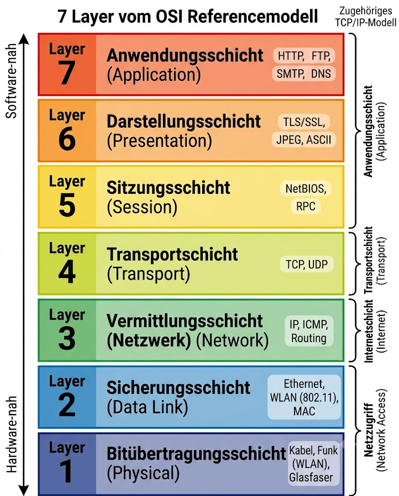

Vorlesung 15 · Informatik-Grundlagen · Maschinenbau
OSI-Modell, IP-Adressen, DNS und Industrieprotokolle – warum funktioniert Netflix per WLAN, aber nicht der Drucker?
WS 2025/26 · DHBW Stuttgart
📌 Nach dieser Vorlesung kannst du …
Netzwerkkommunikation ist ein hochkomplexes Problem: Bits müssen physisch übertragen, Pakete korrekt adressiert, Übertragungsfehler erkannt und Anwendungsdaten korrekt interpretiert werden. Würde man all das in einem einzigen riesigen System lösen, wäre es unwartbar und unflexibel. Die Lösung heißt Schichtenarchitektur: Man teilt das Gesamtproblem in klar abgegrenzte Teilprobleme auf, die jeweils von einer eigenen Schicht gelöst werden.
Wenn du von Stuttgart nach München fährst, gibt es verschiedene Ebenen: Die Navigations-App plant die Route (Anwendungsschicht). Das Auto ist das Transportmittel (Transportschicht). Die Straßen und Autobahnen sind die physische Infrastruktur (Übertragungsschicht). Jede Ebene nutzt die darunter liegende, ohne deren Details zu kennen. Die App muss nichts über Motormanagement wissen – sie ruft nur „fahre nach München" auf.
Dieses Prinzip heißt Abstraktion: Jede Schicht bietet der darüber liegenden Schicht eine saubere Schnittstelle an und versteckt die eigene Komplexität. Eine neue Übertragungstechnologie (z. B. 5G statt WLAN) kann eingetauscht werden, ohne dass sich die Anwendungen ändern müssen.
Das OSI-Referenzmodell (Open Systems Interconnection) teilt Netzwerkkommunikation in sieben Schichten auf. Es ist ein theoretisches Referenzmodell, das 1984 von der ISO standardisiert wurde. In der Praxis werden oft nur die wichtigsten Schichten aktiv diskutiert – der Rest ist Infrastruktur, die im Hintergrund arbeitet.

| # | Schicht (DE) | Kurzbeschreibung | Beispiele | Relevanz |
|---|---|---|---|---|
| 7 | Anwendung | Schnittstelle für Anwendungsprogramme | HTTP, FTP, SMTP, DNS | ★★★ |
| 6 | Darstellung | Kodierung, Verschlüsselung, Kompression | TLS/SSL, JPEG, ASCII | ★★☆ |
| 5 | Sitzung | Aufbau und Steuerung von Sitzungen | NetBIOS, RPC | ★☆☆ |
| 4 | Transport | Zuverlässige Ende-zu-Ende-Übertragung | TCP, UDP | ★★★ |
| 3 | Vermittlung / Netzwerk | Adressierung und Routing zwischen Netzen | IP, ICMP | ★★★ |
| 2 | Sicherung | Zuverlässige Übertragung im lokalen Netz | Ethernet, WLAN (802.11) | ★★☆ |
| 1 | Bitübertragung | Physische Übertragung von Bits | Kabel, Funk, Licht (LWL) | ★★★ |
Von unten nach oben: Bitte Send Nicht Trolle Sehr Dumme Anfragen → Bitübertragung, Sicherung, Netzwerk, Transport, Sitzung, Darstellung, Anwendung.
Das TCP/IP-Modell ist das Modell, das das heutige Internet tatsächlich nutzt. Es vereinfacht die sieben OSI-Schichten auf vier praxisorientierte Schichten und bildet die technische Grundlage für alle modernen Netzwerke – von WLAN zu Hause bis zum weltweiten Internet.
4 – Anwendungsschicht
Enthält alle anwendungsspezifischen Protokolle. Entspricht OSI-Schichten 5–7. Beispiele: HTTP (Web), SMTP (E-Mail), DNS (Namensauflösung).
3 – Transportschicht
Kümmert sich um zuverlässige (TCP) oder schnelle (UDP) Übertragung zwischen zwei Endpunkten. Entspricht OSI-Schicht 4.
2 – Internetschicht
Zuständig für Adressierung (IP-Adressen) und Routing – also dafür, dass Pakete über mehrere Netzwerke hinweg den richtigen Weg finden. Entspricht OSI-Schicht 3.
1 – Netzzugangsschicht
Physische Übertragung im lokalen Netz – Kabel, WLAN, Glasfaser. Entspricht OSI-Schichten 1–2.
Drei Konzepte bilden das Adressierungssystem von Netzwerken. Sie arbeiten auf verschiedenen Ebenen und haben unterschiedliche Aufgaben – ihre Unterschiede zu kennen ist fundamental für das Verständnis von Netzwerken.
IP-Adresse = Hausnummer
Die IP-Adresse identifiziert ein Gerät im Netzwerk – wie eine Hausnummer in einer Straße. IPv4-Adressen bestehen aus vier Zahlen (0–255), z. B. 192.168.1.1. IP-Adressen können sich ändern (dynamisch vergeben durch DHCP). Sie ermöglichen das Routing über Netzwerkgrenzen hinweg.
MAC-Adresse = Personalausweis
Die MAC-Adresse (Media Access Control) ist eine weltweit eindeutige Hardware-Adresse, die fest in der Netzwerkkarte eingebrannt ist – wie eine unveränderliche Seriennummer. Sie hat das Format AA:BB:CC:DD:EE:FF und wird nur im lokalen Netzwerk verwendet. Der Router kennt keine MAC-Adressen außerhalb des eigenen Netzes.
Port = Wohnungstür
Ein Port ist eine Nummer (0–65535), die innerhalb eines Geräts bestimmt, welche Anwendung die Daten empfangen soll. Wenn IP-Adresse und Port zusammen angegeben werden, ist die Adressierung eindeutig bis zur Anwendung: 192.168.1.1:80 = HTTP-Server. Port 80 ist HTTP, Port 443 ist HTTPS, Port 22 ist SSH.
IP-Adresse = Hausnummer (wo im Netzwerk?) · MAC-Adresse = Personalausweis (wer ist das Gerät?) · Port = Wohnungstür (welche Anwendung?)
Computer kommunizieren über IP-Adressen – Menschen merken sich aber keine Zahlen, sondern Namen wie dhbw-stuttgart.de oder google.com. Das Domain Name System (DNS) übernimmt die Übersetzung: Es wandelt menschenlesbare Domainnamen in maschinenlesbare IP-Adressen um.
Du tippst netflix.com in den Browser. Dein Computer fragt zuerst den lokalen DNS-Cache – gibt es einen gespeicherten Eintrag? Wenn nicht, fragt er den DNS-Server deines Routers oder Internetanbieters. Dieser sucht in einer hierarchischen Struktur globaler DNS-Server, bis er die IP-Adresse von Netflix findet – z. B. 54.236.131.12. Diese IP-Adresse schickt er zurück an deinen Browser, der jetzt die Verbindung aufbaut. Der gesamte Vorgang dauert Millisekunden und ist für dich unsichtbar.
Netflix funktioniert per WLAN, weil dein Gerät eine gültige IP-Adresse hat und DNS die Serveradresse von Netflix auflösen kann. Ein Drucker „funktioniert nicht", weil er entweder im falschen Netzwerksegment sitzt, eine fehlerhafte IP-Adresse hat, oder der DNS-Eintrag für den Druckernamen nicht konfiguriert ist. Das sind unterschiedliche Netzwerkprobleme – IP-Problem vs. DNS-Problem vs. Routing-Problem.
In der industriellen Automatisierung reichen Standard-IT-Protokolle wie HTTP oft nicht aus: Maschinensteuerungen brauchen deterministische Kommunikation (feste, garantierte Zeitabstände), hohe Verfügbarkeit und spezielle Datenmodelle für Sensoren und Aktoren. Deshalb gibt es spezialisierte Industrieprotokolle.
| Protokoll | Herkunft / Träger | Typischer Einsatz |
|---|---|---|
| Modbus TCP | Ursprung 1979 (Modicon); heute offen und weit verbreitet | Einfache Sensor-/Aktor-Kommunikation, SPS-Anbindung, Energiemessung |
| OPC UA | OPC Foundation; plattformunabhängig | Maschinen-zu-Maschinen-Kommunikation, IoT-Gateways, Industrie-4.0-Plattformen |
| PROFINET | Siemens / PROFIBUS Nutzerorganisation | Echtzeitsteuerung in Fertigungsanlagen, Roboter, Antriebe |
Als Maschinenbauer wirst du im Beruf an Maschinen arbeiten, die über diese Protokolle vernetzt sind. Auch wenn du die Details nicht kennen musst, ist es wichtig zu wissen, dass Industrienetzwerke anderen Anforderungen folgen als Büro-IT – insbesondere bei Echtzeit, Verfügbarkeit und Sicherheit (Security).
Das Schichtenmodell beherrscht Netzwerkkomplexität durch Abstraktion. Das OSI-Modell hat 7 Schichten; das praktische TCP/IP-Modell fasst sie auf 4 zusammen. IP-Adresse adressiert das Gerät im Netz, MAC-Adresse identifiziert die Hardware eindeutig, der Port bestimmt die Anwendung. DNS übersetzt Namen in IP-Adressen – das Telefonbuch des Internets. In der Industrie kommen Modbus TCP, OPC UA und PROFINET für deterministische Maschinenvernetzung zum Einsatz.
| Konzept | Kernaussage |
|---|---|
| Schichtenmodell | Abstraktion: Jede Schicht löst ein Teilproblem und verbirgt die Komplexität |
| OSI-Modell | 7 Schichten; Referenzmodell; Schicht 1, 3, 4, 7 sind praxisrelevant |
| TCP/IP | 4-Schichten-Modell; Grundlage des Internets |
| IP-Adresse | Hausnummer; identifiziert Gerät im Netz; z. B. 192.168.1.1 |
| MAC-Adresse | Personalausweis; Hardware-Seriennummer; nur lokal relevant |
| Port | Wohnungstür; welche Anwendung empfängt die Daten (0–65535) |
| DNS | Telefonbuch: dhbw-stuttgart.de → IP-Adresse |
| Industrieprotokolle | Modbus TCP, OPC UA, PROFINET für deterministische Maschinenvernetzung |